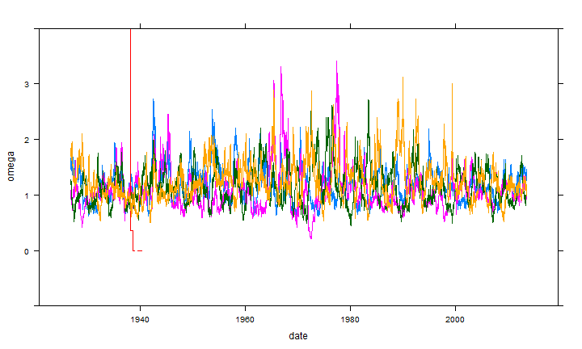
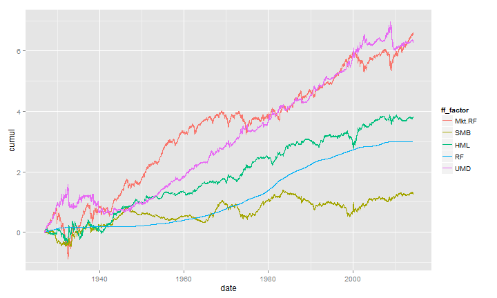

Trying R with d3 Style Chains
R seems to be experiencing a quiet revolution led by pipes | chains borrowed from Javascript, F#, and Unix. dplyr and magrittr are independent projects, but they have benefitted greatly from each other. Chaining results in much more readable code, and as a nice side benefit, Romain Francois' C magic makes dplyr extremely fast. I thought I would collect a couple of example workflows with the French-Fama factors and xts data. dplyr and magrittr are not designed to work with xts time series out of the box, so these time series require a couple of extra steps.
I will also use tidyr, which is Hadley Wickham's rethought reshape2. tidyr is designed to fit nicely into the dplyr/magrittr workflow. Its simplicity makes it power deceptive.
Best practices with chains in R are still not yet decided, and magrittr is evolving rapidly, so much might change, but I think we have already moved far enough in this direction that return to our old ways is unlikely.
Let's require all the libraries. If you do not have them, install_github from devtools will get you up to date.
require(quantmod)
require(PerformanceAnalytics)
require(dplyr)
require(tidyr)
#not necessary but include for examples
require(lattice)
require(ggplot2)
Data Once Again from Kenneth French
Similar to lots of posts, I will use this ugly R code to load in the data from the Kenneth French data library.
#daily factors from Kenneth French Data Library
#get Mkt.RF, SMB, HML, and RF
#UMD is in a different file
my.url="http://mba.tuck.dartmouth.edu/pages/faculty/ken.french/ftp/F-F_Research_Data_Factors_daily.zip"
my.tempfile<-paste(tempdir(),"\\frenchfactors.zip",sep="")
my.usefile<-paste(tempdir(),"\\F-F_Research_Data_Factors_daily.txt",sep="")
download.file(my.url, my.tempfile, method="auto",
quiet = FALSE, mode = "wb",cacheOK = TRUE)
unzip(my.tempfile,exdir=tempdir(),junkpath=TRUE)
#read space delimited text file extracted from zip
french_factors <- read.table(file=my.usefile,
header = TRUE, sep = "",
as.is = TRUE,
skip = 4, nrows=23215)
#get xts for analysis
french_factors_xts <- as.xts(
french_factors,
order.by=as.Date(
rownames(french_factors),
format="%Y%m%d"
)
)
#now get the momentum factor
my.url="http://mba.tuck.dartmouth.edu/pages/faculty/ken.french/ftp/F-F_Momentum_Factor_daily.zip"
my.usefile<-paste(tempdir(),"\\F-F_Momentum_Factor_daily.txt",sep="")
download.file(my.url, my.tempfile, method="auto",
quiet = FALSE, mode = "wb",cacheOK = TRUE)
unzip(my.tempfile,exdir=tempdir(),junkpath=TRUE)
#read space delimited text file extracted from zip
french_momentum <- read.table(file=my.usefile,
header = TRUE, sep = "",
as.is = TRUE,
skip = 13, nrows=23114)
#get xts for analysis
french_momentum_xts <- as.xts(
french_momentum,
order.by=as.Date(
rownames(french_momentum),
format="%Y%m%d"
)
)
#merge UMD (momentum) with other french factors
french_factors_xts <- na.omit( merge( french_factors_xts, french_momentum_xts ) )
french_factors_xts <- french_factors_xts/100
Rolling Analysis in Chains
I have noticed that rolling analysis with xts can sometimes be slow. as.matrix is my favorite way to speed things up, since I usually do not need xts powerful indexing and subsetting features. I thought the additional complexity of rolling analysis would offer a nice challenge to improve my understanding of xts + dplyr. Here is a quick test. I would love thoughts on a better approach with comments that offer the comprable melt and ddply method.
#now we should have all the french factor data that we need
#we can start to do our exploration
#but this time use dplyr
system.time(
df_dplyr <-
#get xts as data.frame to take advantage of new features
data.frame("date"=index(french_factors_xts),french_factors_xts) %>%
# long form similar to melt(
# data.frame(
# date=as.Date(index(french_factors_xts)),
# french_factors_xts
# ),
# id.vars = "date",
# variable.name = "mkt_factor",
# value.name = "roc"
#)
gather(ff_factor,roc,-date) %.%
# group it and apply a function similar to ddply(
# df,
# .(ff_factor,roc),
# summarise(
# date = french_factors_xts$date[seq(1,nrow(french_factors_xts)-199,by=1)],
# omega = function(x) {
# rollapply( as.numeric(x$roc), Omega, width = 200, by = 1)
# }
# )
# )
group_by( ff_factor ) %.%
do(
data.frame(
date = .$date[seq(1,nrow(.)-199,by=1)],
omega = rollapply( as.numeric(.$roc) , Omega, width=200, by=1)
)
)
)
|========= | 20% ~12 s remaining
|=================== | 40% ~9 s remaining
|============================= | 60% ~6 s remaining
|======================================= | 80% ~3 s remaining
Completed after 15 s
user system elapsed
14.88 0.00 15.09
This might be the longest I have gone without a plot, so let's use lattice to create a very quick and admittedly ugly line plot.
xyplot(omega~date, groups = ff_factor, data = df_dplyr,type="l",ylim=c(-1,4))

Plotting as Part of Our Chain
I am ashamed to admit how long it took me to realize that plotting could integrate nicely into chains. Below I show how we can use Gmisc htmlTable to nicely output a table with the last 5 daily returns from each of the factors.
require(Gmisc)
data.frame(
"date"=format(index(french_factors_xts)),
french_factors_xts
) %>%
gather(ff_factor,roc,-date) %>%
mutate(
date = as.character(date),
ff_factor = as.character(ff_factor),
roc = paste0(format(roc*100,digits=4),"%")
) %>%
group_by( ff_factor ) %>%
top_n(n=5,date) %>%
htmlTable %>%
cat
| data.frame | date | ff_factor | roc |
|---|---|---|---|
| 1 | 2014-04-24 | Mkt.RF | 0.080% |
| 2 | 2014-04-25 | Mkt.RF | -1.040% |
| 3 | 2014-04-28 | Mkt.RF | 0.110% |
| 4 | 2014-04-29 | Mkt.RF | 0.560% |
| 5 | 2014-04-30 | Mkt.RF | 0.350% |
| 6 | 2014-04-24 | SMB | -0.390% |
| 7 | 2014-04-25 | SMB | -0.870% |
| 8 | 2014-04-28 | SMB | -0.610% |
| 9 | 2014-04-29 | SMB | -0.220% |
| 10 | 2014-04-30 | SMB | 0.220% |
| 11 | 2014-04-24 | HML | -0.080% |
| 12 | 2014-04-25 | HML | 0.630% |
| 13 | 2014-04-28 | HML | -0.430% |
| 14 | 2014-04-29 | HML | -0.230% |
| 15 | 2014-04-30 | HML | -0.040% |
| 16 | 2014-04-24 | RF | 0.000% |
| 17 | 2014-04-25 | RF | 0.000% |
| 18 | 2014-04-28 | RF | 0.000% |
| 19 | 2014-04-29 | RF | 0.000% |
| 20 | 2014-04-30 | RF | 0.000% |
| 21 | 2014-04-24 | UMD | -0.540% |
| 22 | 2014-04-25 | UMD | -1.240% |
| 23 | 2014-04-28 | UMD | -1.150% |
| 24 | 2014-04-29 | UMD | 0.670% |
| 25 | 2014-04-30 | UMD | 0.540% |
I do not think it was intentional, but ggplot2 also fits nicely and cleanly into our chains. Often, I think data cleaning and aggregation should be separated from the output, but it is nice to be able to walk from raw data to final output in one uninterrupted block of code.
data.frame("date"=index(french_factors_xts),french_factors_xts) %>%
gather(ff_factor,roc,-date) %>%
ggplot(data = .,aes(x=date,y=roc,colour=ff_factor)) + geom_line()

The previous plot did not do any calculations, so let's add a simple cumsum to get a cumulative line chart of the returns for each factor. These calculations could be much more complex using this same technique.
data.frame("date"=index(french_factors_xts),french_factors_xts) %>%
gather(ff_factor,roc,-date) %>%
group_by( ff_factor ) %>%
mutate(cumul = cumsum(roc)) %>%
ggplot(data = .,aes(x=date,y=cumul,colour=ff_factor)) + geom_line()

Complete the Chain with rCharts
As the R world moves to chains and pipes, the entire vis world is simultaneously moving to interactive charts. Within R visualization, we can see this parallel shift to interactivity with rCharts, ggvis, googleVis, and animint. Since ggvis and dplyr share the same source, I am sure we will see ggvis chains soon, so here I will show rCharts in our chain.
require(rCharts)
data.frame(
"date"= french_factors_xts %>% index %>% format,
french_factors_xts,
row.names= NULL
) %>%
tbl_df %>%
gather(ff_factor,roc,-date) %>%
group_by( ff_factor ) %>%
mutate(cumul = cumsum(roc)) %>%
#demo filter to get end of month instead of daily
filter(
date %in% format(
index(
french_factors_xts[french_factors_xts %>% endpoints(on="months")]
)
)
) %>%
dPlot(
cumul~date
,groups="ff_factor"
,data = .
,type="line"
,xAxis = list(
type = "addTimeAxis"
, inputFormat = '%Y-%m-%d'
, outputFormat = "%b %Y"
)
,yAxis = list( outputFormat = ".2f")
)
Refined output currently requires some additional manipulation. In the chart above, I do not like the x axis, and want to include some code to just make tick marks for each decade. For this to occur, rCharts functions might need to be redesigned to return the chart instead of manipulate the object. I will appeal to expert R gurus for the best approach to this. Here is my ugly first hack.
#very hacky way of accomplishing
#need to iterate to something better
modifyChartList <- function( x, element, val ) {
rTemp <- x$copy()
rTemp[[element]] <- modifyList(rTemp[[element]], val)
return(rTemp)
}
data.frame(
#maybe chaining here makes more confusing
"date"= french_factors_xts %>% index %>% format,
french_factors_xts,
row.names= NULL
) %>%
tbl_df %>%
gather(ff_factor,roc,-date) %>%
group_by( ff_factor ) %>%
mutate(cumul = cumsum(roc)) %>%
#demo filter to get end of quarter instead of daily
filter(
date %in% format(index(french_factors_xts[french_factors_xts %>% endpoints(on="quarters")]))
) %>%
dPlot(
cumul~date
,groups="ff_factor"
,data = .
,type="line"
,xAxis = list(
type = "addTimeAxis"
, inputFormat = '%Y-%m-%d'
, outputFormat = "%b %Y"
)
,yAxis = list( outputFormat = ".2f")
) %>%
modifyChartList(
element = "templates",
val = list(afterScript = '
<script>
.axes[0].shapes.selectAll(".tick")[0].forEach(function(d,i){
if (!(+d3.time.format("%Y")(new Date(+d3.select(d).datum())) % 10 == 0)) {
d.remove()
} else {
d3.select(d).select("text")
.attr("transform",null)
.attr("y","0")
.attr("dy","2em")
.style("text-anchor","middle")
.text(d3.time.format("%Y")(new Date(+d3.select(d).datum())))
}
});
</script>
'
)
)
Discussion %>% Conclusion
After a little bit of experimentation, chains and pipes quickly become quite natural. I will eagerly read any new code and closely follow magrittr to become even more skilled at this, so June 23, 2014 might be the last bit of code that I share with no chains.
Thanks
As I hope you can tell, this post was more a function of the efforts of others than of my own.
Thanks specifically:
- Kenneth French for his very generous data library
- Ramnath Vaidyanathan for rCharts and slidify.
- John Kiernander for dimplejs.
- Hadley Wickham for lots and lots of R packages.
- Stefan Milton Bache for magrittr.
- Mike Bostock for everything.
- Marcello Palmitessa for the Bootplus framework.
- Google fonts Raleway and Oxygen